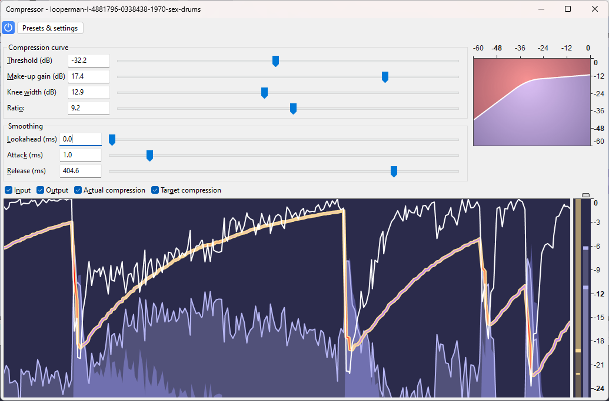
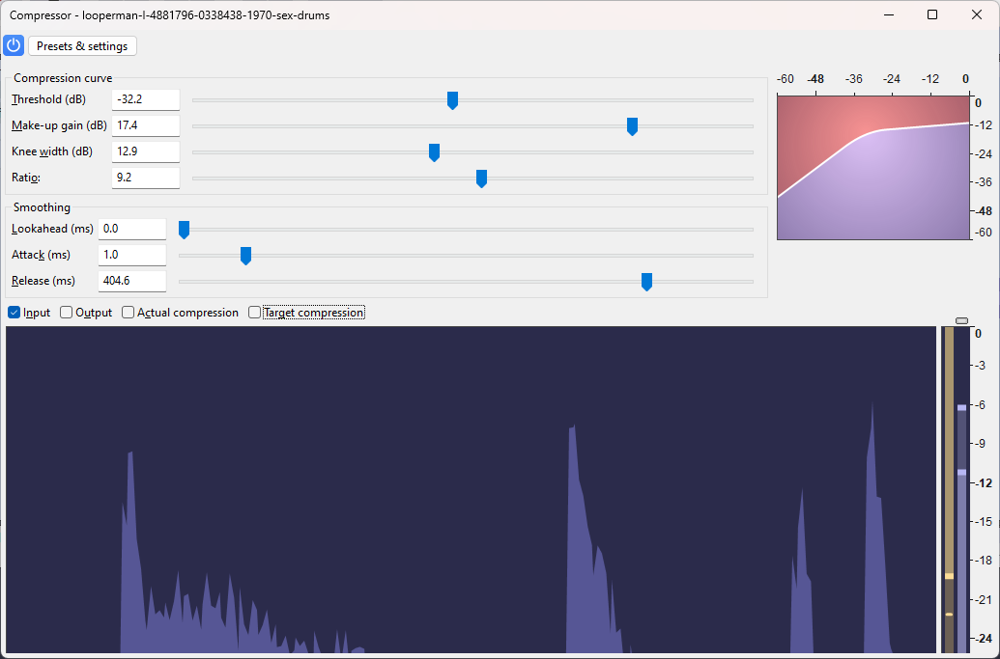
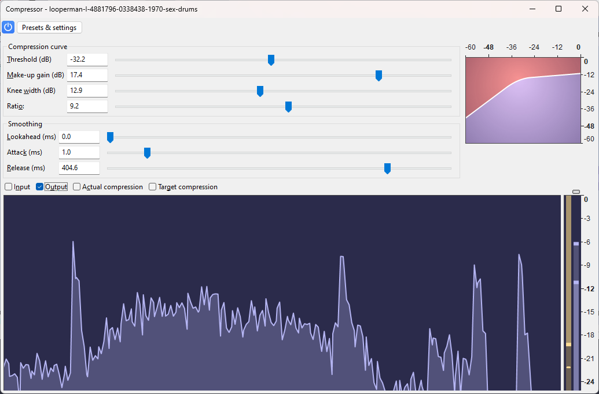
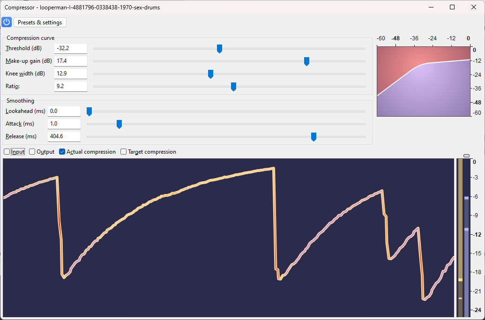
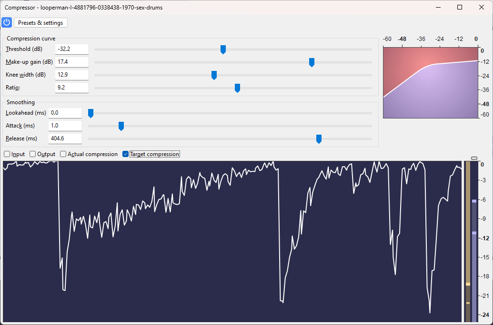
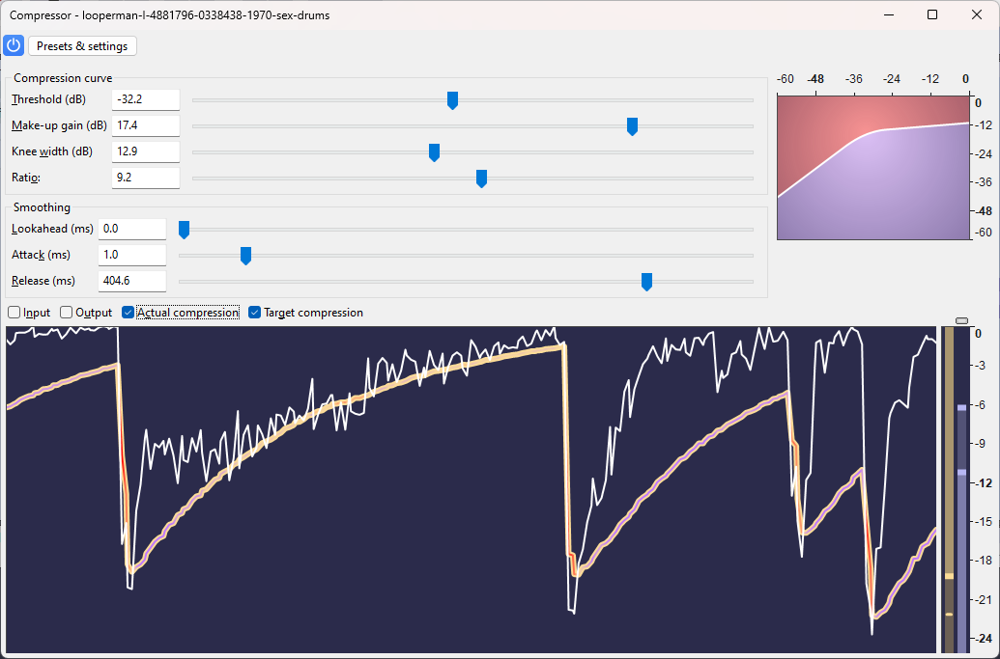
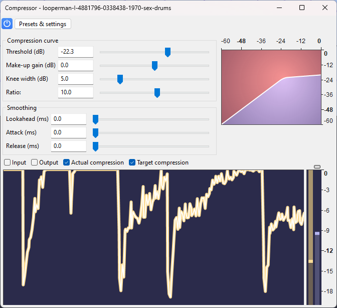

Compressor
One of the main purposes of reducing dynamic range is to permit the audio to be amplified further (without clipping) than would be otherwise possible.
Compression may also be used for aesthetic purposes, too, such as making lower-volume elements louder, adding punchiness to a bass line (with the use of attack) or adding a pumping effect to a mix with drums (with the use of lookahead and/or release).
Note carefully that when you apply an effect to a time-stretched clip the changed speed of the clip will be automatically rendered.
|
- Accessed by:
{kind=link}
Compression curve graph
This graph shows the input level along the top (horizontal axis) and the output level scale on the right (vertical axis) to illustrate the dynamic range compression effect. The graph will change as you adjust the Threshold, Ratio, Make-Up Gain and Knee Width sliders, reflecting those settings. The graph does not reflect changes in any of the other controls, although they all affect how the audio sounds after applying the effect.
- A signal coming in at -36 dB will come out as -36 dB - no compression is applied as it is below the threshold.
- A signal coming in at 0dB will come out as -9dB - the input is 10dB above the threshold, and the compression ratio is of 10:1, so the 10dB excess will become only 1.
If you wanted to make up for the lost volume, you could now add make-up gain to push the graph upwards.
Controls
Compression curve
- Threshold: The level above which compression is applied to the audio.
- Make-up gain: Amplifies the resultant audio in all selected tracks after compression by the specified amount (default is 0dB). All tracks are amplified by the same amount as in the Amplify effect.
- Knee width: How "sharp" the threshold is. At a knee width of 0dB, the compressor immediately engages at full power once the threshold is hit. When the knee width is wider, some compression will get applied before the threshold, making the transition into a fully compressed signal softer.
- Ratio: The amount of compression applied to the audio once it passes the threshold level. The higher the Ratio the more the loud parts of the audio will be compressed. The Ratio sets the slope of the white line on the graph above the threshold.
More information on the controls can be found in the Compressor curve page.
Smoothing
Compressing the dynamic range of an audio signal necessarily means modifying its waveshape, which causes distortion. Whether the distortion is perceivable or not depends on many factors. In general, perceivable distortion is to be avoided, except if it is mean for aesthetic purpose. Otherwise, time smoothing is a way of reducing the distortion, by gradually applying the compression before or after the input goes above the threshold, and/or gradually releasing the compression after the input has gone back below the threshold.
- Lookahead: Compression is applied gradually before the input exceeds the threshold. (The necessary latency for this to be possible is compensated by Audacity's effect framework.)
- Attack: Compression is applied gradually after the input has exceeded the threshold. Since the effect is reacting to this transition (rather than anticipating it, as is the case with lookahead), the output signal will temporarily "overshoot", going in the red area of the graph (see above).
- Release Compression is released gradually after the input has gone back below the threshold. Since the effect is reacting to this transition, the output signal with temporarily "undershoot", going in the purple area of the graph (see above).
More information on the smoothing parameters can be found in the Smoothing page.
Factory Presets
There are several Factory Presets for the Compressor shipped with Audacity, you can access these using the button.
This list explains some of those presets:
- Beefy Master - for use on the master track if you need to smooth out the attack but add density.
- Climax Impulse - for very sharp sounds. The tail is losing, and the attack opposite begins to sound bright.
- Deep Dive Master - will work perfectly on a master track, where it will imperceptibly add density without much change of dynamics.
- Great Impact - for shots, hits, any sounds, where you want to especially highlight the signal attack while keeping a good tail.
- Great Tail - for magic, explosion tails, reverberation tails, etc.
- Presets for working with voice - for working with dialogs and podcasts, as well as where the voice needs to be made larger and brighter.
- Fat
- Power
- Make it Right
- Voice Memos Balance is a preset for working with the sound recorded on the iPhone using Voice Memos. It will raise the volume of quiet sounds a little and create a neutral balance in dynamics.
Realtime use
The Compressor can be run non-destructively in realtime on any individual track using the track's effects stack or the master effect stack. Please see Using realtime effects on the Muse Support site for details.
In realtime use there is a graph which enables you to see what the Compressor actually is doing and how it is responding to the parameter setting changes that you make in realtime.
Graph elements All elements All elements toggled on  | Input the level (short-time peak value) of the input  Output the level (short-time peak value) of the output  Actual compression the compression gain applied to the input
(not taking make-up gain into account) Target compression the compression gain that would be applied to the input
if it weren't for the smoothing
{kind=link}
{kind=link}
{kind=link}
{kind=link}
{kind=link}
Looking at the graph with both target and actual compression toggled at may be helpful to understand the smoothing:
- 
Conversely, a purple inline symbolizes an "undershoot" situation, during which there is more compression added than necessary for the input level to be mapped as per the compression curve settings. At that moment, the output level can be seen as though it were in lower, the purple area of the compression curve graph.
This is how it could look like if all smoothing parameters were set to zero:
- 
The target compression line is exactly on the actual compression line.
Conclusion
The simple idea of applying a gain whose amount depends on the level of the input can be very aggressive on the audio material and lead to distortion. To alleviate this, several smoothing mechanisms (time smoothing or smoothing of the compression curve) were devised, making a compressor a very delicate effect to manipulate. The effect of a particular setting may depend on the effect of another setting. Some settings might lead to audible distortion on some audio material but not on some other. The effect may be used in a creative way, for example using lookahead or release to create a pumping effect on a rhythm track, or attenuating louder parts of vocals to make breathing and other close-up sounds very audible.